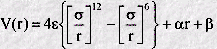

The Shifted Force Lennard-Jones Potential
The Shifted Force Lennard-Jones Potential
The shifted force form of the Lennard-Jones potential energy function is sometimes used when a distance cut off is applied. This is because the imposition of the cut off gives rise to a break in the continuity of the function at the cut off separation - which causes a small step in the energy function as atoms move in and out of the cut off. This has two consequences:
- firstly the energy conservation of the simulation is affected, and the simulation shows small 'jumps' in energy as time progresses;
- secondly the force between the atoms also shows a small step at the cut off, and this can give rise to anomalous structural features when the system structure is later analysed.
Usually these effects do not show up to a great degree, because the cut off is chosen to make the energy and force steps extremely small, but theorists concerned with extreme accuracy, prefer to eliminate them altogether by adding a truncation function.
The concept of a truncation function is a simple one, and may be applied to any potential energy function. All that is required is that two terms are added to the potential function. One is a constant multiplied by r and the other is a plain constant as shown below, where alpha and beta are the constants.

These constants are easy to derive. The constant alpha is chosen firstly so that the force at the cut off separation is zero (in other words the slope of the whole function at the cutoff is zero). The constant beta is then chosen so that the whole potential function (including the alpha term) is zero at the cut off. This is the simplest form of shifted force function. Other forms can be derived which ensure other features of the potential function are retained exactly, such as the location of the equilibrium separation.